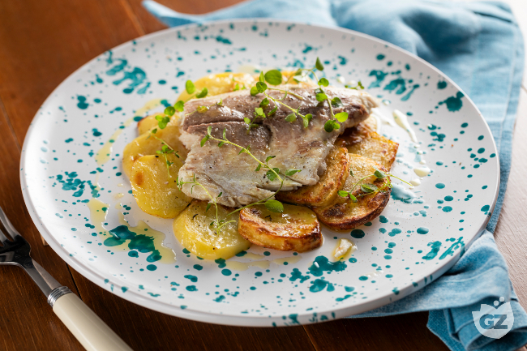

Esercitazione path assoluti e relativi
Città Ideali (Path Assoluti)
Napoli

Copenaghen

New York

Piatti Preferiti (path relativi)
Pizza Margherita
Pasta Fagioli e Cozze
Ricciola al Forno

Link alle mie pagine corsi
Sviluppatore Software
Tecnico Grafico
Tecnico Informatico
Link ad una pagina esterna
Articolo "Internet sta per rompersi" de "Il Post"